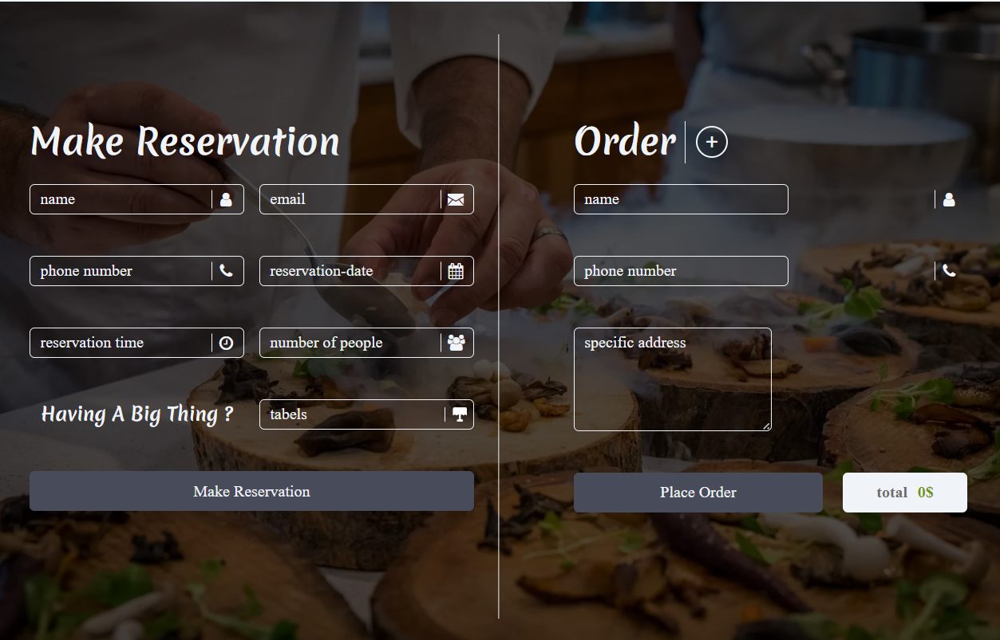

notes
animatoin delay
suppose you have multiple elements (say 3) you want to animate them so each one is delayed by some duration (say 2s) than the one before it.instead of using animation-delay css to delay each one which is not practical in case of big numners.You but customized data-* (say data-delay) on each one with the number of seconds (or milliseconds) delay you want for thet particular element and then wirte the following css: animation-delay: attr(data-delay) and now you have as many animations as you want seperated by certain cumulative duration with just one line of css 😃.
justify self & justify items work only with grid and don't work with flexbox
The justify-self and justify-items properties are not implemented in flexbox. This is due to the one-dimensional nature of flexbox, and that there may be multiple items along the axis, making it impossible to justify a single item. To align items along the main, inline axis in flexbox you use the justify-content property.as in the flexbox (on the main axis) children are treated as a group
align-items VS align-content
note in order to be able to explain the difference we will talk about grid element
visually: align-item aligns each item in its own grid area.
while in align-content will pack them in the top of the container. like shown in the pervious image.
example: align-items: start will results in the image below.
under the hood: align-items sets the value of align-self for all child elements at once.
while align-content deals with the grid lines itself.
the images below are for align-conetent start and align-conetent end respectivly
why the elements got taller ?
in the code on mdn the first two elemnts were set to span to rows
so it's basically stretches from the beginning of the first
row to the end of the second row and since the space between the
rows got taller the end of the row got further resulting in the
elements got taller.
:focus-within
it applies style on the element if the element itself or any of its children is focused
in the case with just :focus when you focus on any of the elements children the focus on the elemenet is lost
place-items
its a shorthand for align-items and
justify content respectivly (align
value comes before justify value)
note that in flexbox justify-items doesn't work as children
are treated as one on the main axis so in case of row is main axis
the second value will be ignored in flexbox.
same explanation goes with
place-content
and
place-self
note that justify-slef doesn't work
with flexbox
:after & :before don't work
according to answer on stack overflow
gap is not working properly
I noticed in the section in the image below that the separator is not exactly in the middle
the proplem was from the padding of the inputs was changing their width and hence all the containers on them causing the gap to push the form only
solution was to explicitly set the width of the input to 100%


 Learn more in the
Learn more in the